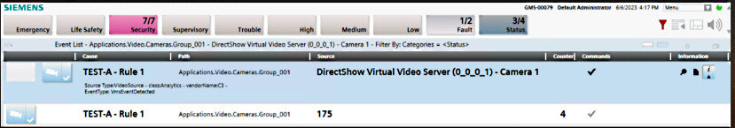
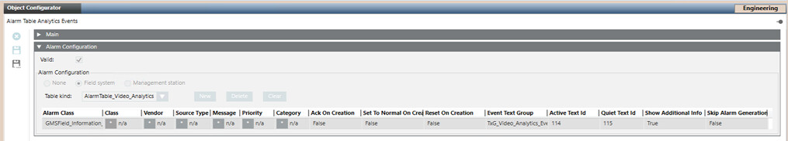
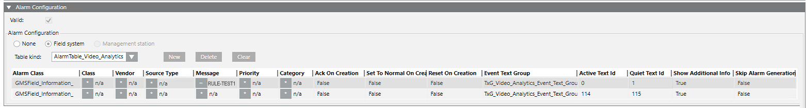
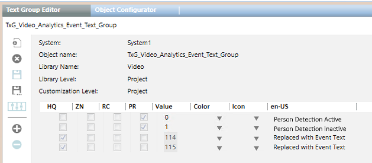

Customizing VMS Analytic Events
The Milestone / Siveillance VMS can be configured to detect and report analytic events. These are events arising from image analysis, such as license plate recognition, person identification or perimeter intrusion detection.
By default, any analytic events generated by the VMS are reported in Desigo CC with the event category Status, and with the analytic event name (as defined in VMS) as the event Cause. If required, you can customize how VMS analytic events are reported in Desigo CC in order to:
- Associate a different event category to VMS analytic events
- Display a localizable event text, rather than the event name received from VMS
NOTE: This procedure provides specific information for VMS analytic events. For instructions relating to video events in general see Customizing Video Alarm Tables.
NOTICE

System malfunction
Incorrect modifications to system libraries will cause the product to malfunction.
Do not modify system libraries unless you have enough knowledge and experience to change them without destroying or corrupting crucial data.
Prerequisites
- Desigo CC is configured to integrate video surveillance with the Milestone/Siveillance VMS.
- The Milestone / Siveillance VMS is configured to detect analytic events (for example, with the Saimos VA plugin).
- You are authorized and trained to customize the system libraries.
- System Manager is in Engineering mode.
- System Browser is in Management View.
1 - Set Up a Customized Alarm Table for Analytic Events
To change the default behavior, you must first set up the video system to use an alarm table for analytic events at your allowed customization level (for example L4-Project).
- Customize the headquarters Video library structure to the allowed customization level. See Customize the Video Library.
- Save a copy of the headquarters Alarm Table Analytic Events to the allowed customization level. See Copy Headquarters Alarm Table to Customized Library.
- Customize the video Management object model to the allowed customization level, and apply the customized Alarm Table for Analytic Events to its AnalyticEventsCollector property. See Apply Customized Alarm Table to Customized Object Model.
NOTE: To check the end result of this procedure, you can do the following (this example is for the L4-Project customization level):
- Select […] > Libraries > L4-Project > Video > Video > Object Model > Management.
- In the Models and Functions tab, open the Properties expander and select the AnalyticEventsCollector property.
- In the Alarm Configuration expander, the Alarm table reference drop-down list shows the alarm table currently being applied for analytic events.
- This should be the customized alarm table located at […] > Libraries > L4-Project > Video > Video > Alarm Tables > [alarm table for analytic events].
2 - Modify the Customized Alarm Table for Analytic Events
Now you can modify the alarm table to change the default behavior. In this example we want to replace "RULE-TEST1" (the Message text received from VMS, corresponding to the event name as defined in VMS) with a more descriptive and localizable Cause.

- Select the analytic alarm table in the customized video library. For example, […] > Libraries > L4-Project > Video > Video > Alarm Tables > [alarm table for analytic events].
- In the Object Configurator tab, open the Alarm Configuration expander.
- The content of the video alarm table for VMS analytic events displays. By default it contains only one catch-all row that sets how all VMS analytic events are reported in Desigo CC.
NOTE: This row is mandatory and must always be present as the last (lowermost) one in the alarm table. If you manually modify the table, for example to add other rows, make sure to also add a row with the default configuration--shown in the image below--at the end. 
- For this example, we will add one row to differentiate the events based on the Message text received from the VMS. First of all, click New to an additional row in the alarm table.
- You now have two rows in total in the alarm table. The default row has ended up on top.
- Then, for both the rows:
- Set the Alarm Class to GMSField_Information_
- Set the Event Text Group to TxG_Video_Analytics_Event_Text_Group (you can use copy-paste to do this)
- Set Show Additional Info to True.
- Configure the bottom row with Active Text Id = 114 and Quiet Text Id = 115.
- This recreates the default row, shown in step 2, at the bottom of the alarm table.
- Now configure the top row as follows:
- Message = RULE-TEST1
- Active Text Id = 0, Quiet Text Id = 1
- The completed alarm table should appear as shown below. With this configuration, any analytic events received from the VMS with Message text = "RULE-TEST1" will be displayed in Event List with Texts 0 and 1 (to be configured in the next section). Analytic events with a different message text will continue to be reported as before.

- Click Save
 .
.
3 - Customize the Text Groups for Analytic Events
The default text group for analytic events contains only the Text Ids 114 and 115, used in the default row of the alarm table. These two Ids do not correspond to any preconfigured message text, but instead just pass along the message text received from the VMS for the event. However in the preceding section we added a new row with additional Text Ids (0, 1) to the alarm table, so now we need to configure the texts that correspond to these new Ids.
- In System Browser, select […] > Libraries > L1-Headquarter > Video > Video > Text > TxG_Video_Analytics_Event_Text_Group.
- In the Text Group Editor tab, click Customize
 .
.
NOTE: If the icon is dimmed it means that the selected text group is already customized. Skip to step 4. - Click OK.
- The customized text group is added to the customized video library.
- In System Browser, select the customized text group. For example, […] > Libraries > L4-Project > Video > Video > Text > TxG_Video_Analytics_Event_Text_Group.
- By default this contains only entries for 114 and 115. Now we need to configure additional entries for the new Text Ids used in the customized alarm table.
- Click
 to add a new row. In the Value field, enter the value corresponding to the Text Id in the alarm table, and in the en-US field, enter the message text to display for the corresponding event. This will override the message text received from VMS.
to add a new row. In the Value field, enter the value corresponding to the Text Id in the alarm table, and in the en-US field, enter the message text to display for the corresponding event. This will override the message text received from VMS. - Repeat the preceding step until there is an entry for each TextId.

- Click Save .
4 - Restart the Project for Library Changes to Take Effect
All changes to the system libraries, such as customizations and modifications to object models, alarm tables, and text groups, require a project restart to take effect.
- In SMC, select Projects > [project].
- Click Stop
 , and wait for the project to become
, and wait for the project to become stopped. - Click Start
 to start the project again.
to start the project again.